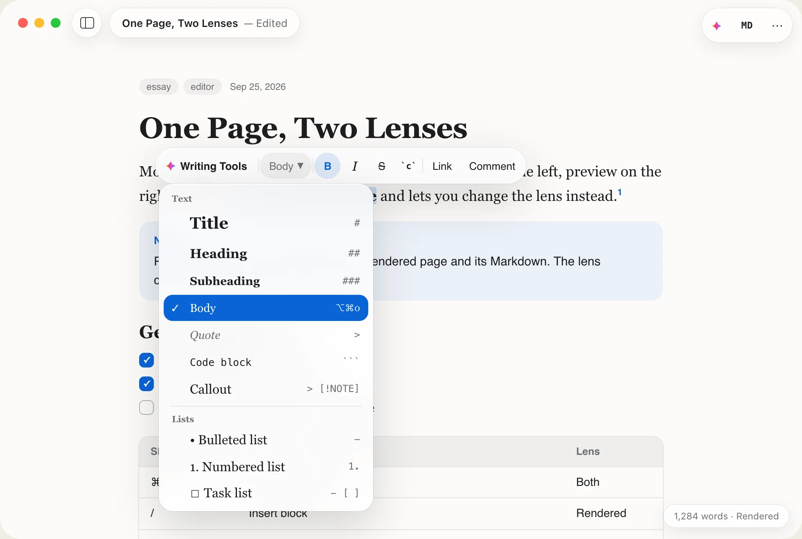
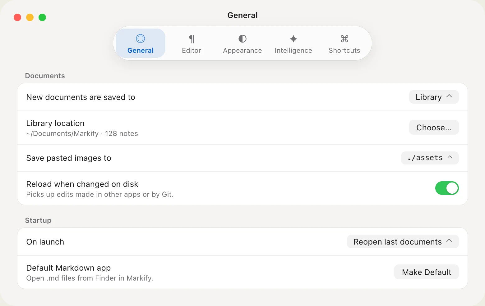
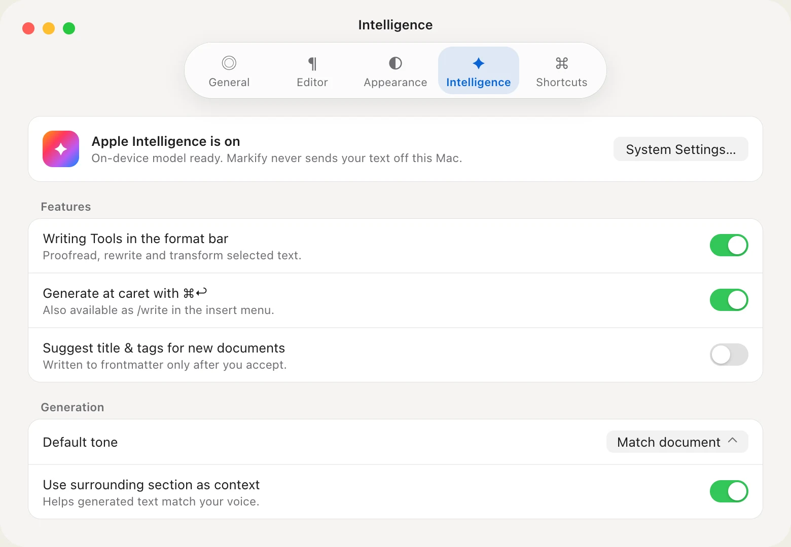

One page.
Two lenses.
Most Markdown editors split the window in two. Markify keeps a single page: write it rendered, press ⌘/, and the same text is plain Markdown. Your caret stays put.
Version 1.60 · Requires macOS 26 Tahoe · Apple silicon and Intel


Near-zero chrome
The page is the interface.
No split preview, no formatting ribbon. Controls float on a thin layer of Liquid Glass and step aside the moment you start typing.
Plain files
Every document is a .md file on disk. Open any file, TextEdit-style, or keep a library folder. Git, Dropbox and other apps see exactly what you wrote.
One source of truth
Both lenses show the same text. Switching is a restyle, not a conversion, so nothing gets rewritten behind your back.
Native all the way
SwiftUI and TextKit 2 with system glass, SF Symbols, autosave, versions and Recents. It behaves like a Mac app because it is one.
Format bar
Select text and the tools appear.
A glass format bar floats above your selection and disappears on the next keystroke. The same bar works in the Markdown lens, where it wraps your text in the right syntax.
- ⌘B ⌘I ⇧⌘X ⌘E ⌘K work without it

Slash menu
Type / to insert anything.
Tables, task lists, code, callouts, math, images, footnotes, frontmatter. Each row shows its Markdown shortcut, so you pick up the syntax as you go.
| — |Table- [ ]Task list> [!NOTE]Callout

Block styles
Every style previews itself.
Open Body ▾ to change the blocks you've selected. Each row is drawn in its own typeface and shows its Markdown prefix.
- ⌥⌘0–⌥⌘3 Body and headings

Library
Open files and notes in one list.
The sidebar slides over the page instead of pushing it aside. Files you opened from anywhere sit next to your library notes, all searchable.
- ⌃⌘S Toggle the library

Focus
Start typing and the chrome fades out.
Toolbar, title and word count fade after your first keystroke, leaving only the page. Move the pointer and they come back.
- You can turn this off in Settings

Find & replace
Find words, not asterisks.
In the rendered lens, Find matches the text you can see and skips syntax characters. Matches are highlighted in place.
- ⌘F Find · ⌥⌘F Replace

Rendered in place
Everything GitHub Markdown does, and more.
Code gets syntax colors, math is typeset, and images sit in the column. Click a task to check it, or press Tab to move between table cells.

Tables
Edit cells in place and press Tab to move to the next one.
| Goal | Owner |
Task lists
Click a checkbox to tick it off. The file updates too.
- [x] Outline the essay
Callouts
GitHub-style notes, tips and warnings, drawn as real blocks.
> [!TIP]
Math
Inline and display equations, typeset as you write.
$$ e^{i\pi}+1=0 $$
Code blocks
Fenced code with syntax colors, in a font you choose.
// Lens.swift enum Lens { case rendered, raw } let key = "⌘/"
Frontmatter & footnotes
YAML metadata shows as chips. Footnotes collect at the end.
tags: [essay, draft] · lens[^1]
Apple Intelligence
A writing partner that stays on your Mac.
Proofread, rewrite and generate with the on-device model. Nothing is sent to a server, and every change is one undo away.


On-device only
Uses the system Writing Tools and the Foundation Models framework. No cloud extensions, no accounts.
You accept every change
AI edits are shown with a colored edge and aren't saved until you keep them. Compare, try again or revert.
Syntax stays intact
In the Markdown lens, Rewrite and Proofread change only your words and leave the syntax alone.
Settings
Change as much or as little as you like.
Choose the lens new documents open in, the prose and code fonts, line width, theme, glass style and accent color. Markify also works fine if you never open Settings.


Shortcuts
Keep your hands on the keys.
Markdown formats as you type in the rendered lens, and the file stays plain Markdown. ⌘Z undoes your typing like any text editor.
Editor
- ⌘/
- Toggle Markdown lens
- ⌃⌘S
- Library sidebar
- /
- Insert a block
- ⌘F
- Find
- ⌥⌘F
- Find & replace
- ⌘G ⇧⌘G
- Find next / previous
- ⌘= ⌘−
- Zoom in / out
- ⌘0
- Actual size
Formatting
- ⌘B
- Bold
- ⌘I
- Italic
- ⇧⌘X
- Strikethrough
- ⌘E
- Inline code
- ⌘K
- Link
- ⌥⌘0–3
- Block style
Intelligence & app
- ⇧⌘W
- Writing Tools, on selected text when enabled in Settings
- ⌘↩
- Generate or continue, when Generate at caret is on and Apple Intelligence is available
- ⌘O
- Open file
- ⌘N
- New document
- ⌘,
- Settings
Start with a blank page.
Free, with the source on GitHub. Pick the build for your Mac: Apple silicon for M1 and later, Intel for older Macs.
Markify 1.60 · Release notes · All releases
Requires macOS 26 Tahoe. Markify isn’t notarized yet: the first time you open it, click Done, then choose Open Anyway in System Settings › Privacy & Security. Step-by-step install guide · FAQ
Support
Keep Markify free.
Markify is independent and free to download. If it has earned a place in your workflow, a sponsorship keeps new releases coming. A star helps other people find it.